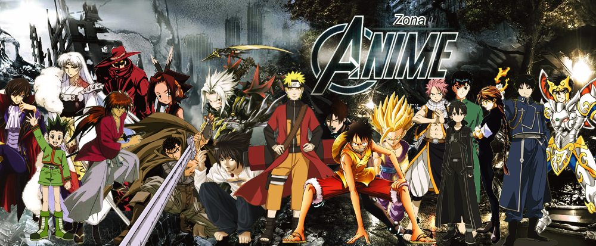
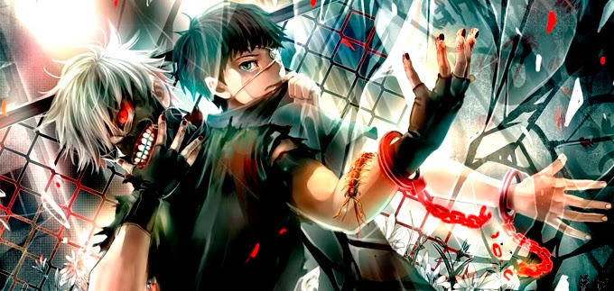
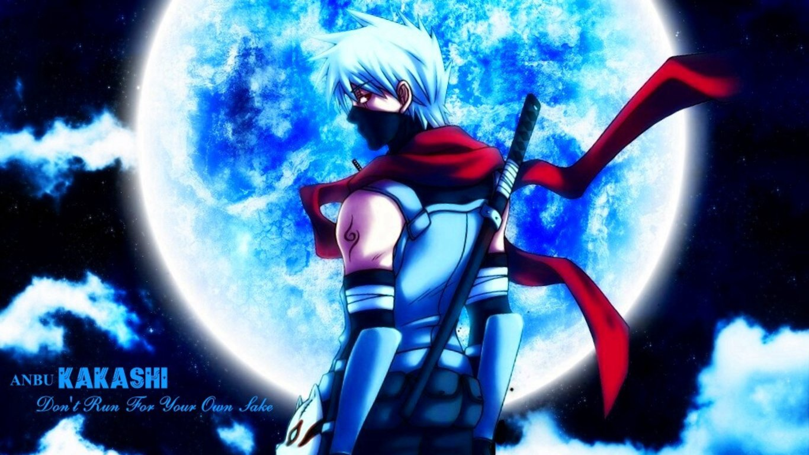
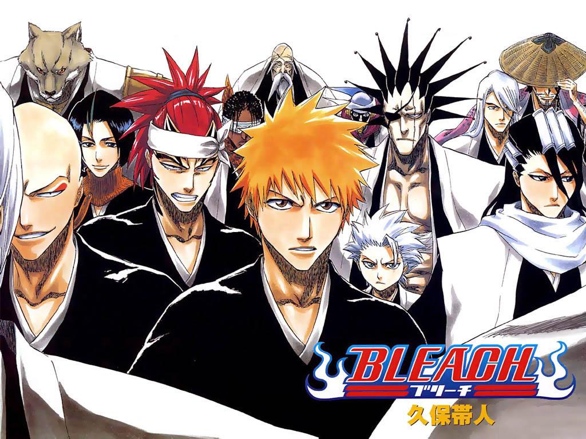

Anime, animê (português brasileiro) ou animé (português europeu) em japonês: アニメ, é um estilo de animação que na maioria das vezes é produzida no Japão. A palavra é a pronúncia abreviada de "animação" em japonês, onde esse termo se refere a qualquer animação[1] . Para os ocidentais a palavra se refere aos desenhos animados vindos do Japão. A origem da palavra é controversa, podendo vir da palavra inglesa animation ("animação") ou da palavra francesa animé ("animado"),[2] versão defendida por pesquisadores como Frederik L Schodt[3] e Alfons Moliné.[4] Ao contrário do que muitos pensam, o animê não é um género, mas um meio, e no Japão produzem-se filmes animados com conteúdos variados, dentro de todos os géneros possíveis e imagináveis (comédia, terror, drama, ficção científica, etc.).

Tokyo Ghoul (東京喰種-トーキョーグール, Tōkyō Gūru?) é uma série de mangá seinen escrita por Sui Ishida. É publicado pela revista Young Jump da editora Shueisha, e foi feita em catorze volumes á partir de 8 de setembro de 2011 até 18 de setembro de 2014. A sequela nomeada como Tokyo Ghoul: re começou a ser publicada em outubro de 2014 pela mesma revista e logo foi feito uma prequela intitulada: Tokyo Ghoul: JACK que esteve em publicação pela Jump Live. Há uma série de 12 episódios como mesmo nome do mangá que foi transmitida pela TV Japonesa e adaptada pelo Studio Pierrot, indo ao ar entre julho e setembro de 2014; depois, exibiu sua segunda temporada chamada Tokyo Ghoul √A, que também teve 12 episódios e foi transmitida de 8 de janeiro a 26 de março de 2015.

Naruto Shippuden (NARUTO -ナルト- 疾風伝, Naruto Shippūden?, em tradução livre, "Naruto - Crônicas do Furacão") é sequência do anime Naruto que está em andamento e abrange do volume vinte e oito em diante. Teve sua estreia no Japão em 15 de fevereiro de 2007 na TV Tokyo.[72] É desenvolvido pelo Studio Pierrot e dirigido por Hayato Date. A rede de TV filipina ABS-CBN foi a primeira fora do Japão a exibir Naruto Shippuden; começando com a transmissão de 40 episódios a partir de 19 de março de 2008. Em 8 de janeiro de 2009, a TV Tokyo começou a transmitir novos episódios via streaming diretamente para assinantes mensais. Cada episódio é disponibilizado online dentro de uma hora após sua estreia japonesa e inclui legendas em inglês.[73] A Viz começou a exibir a segunda fase via streaming em seu site oficial da série com legendas em inglês em 2 de janeiro de 2009.[74] Desde outubro de 2009, os episódios dublados em inglês de Naruto Shippuden começaram a ser exibidos semanalmente no canal Disney XD.[75] Desde Janeiro de 2014, o Adult Swim exibe o anime com dublagem em inglês e sem cortes, através do bloco semanal Toonami, exibido nos sábados.[76]

Bleach (ブリーチ, Burīchi?) é uma série de mangá japonesa escrita e ilustrada por Tite Kubo. Bleach segue as aventuras de Ichigo Kurosaki, que após ganhar poderes de um Shinigami (死神? literalmente, "Deus da morte"), personificação da morte, similar á Morte — através de outro Shinigami, Rukia Kuchiki.[2] Seus novos poderes o forçam a assumir o dever de defender os humanos de espíritos malignos e guiar almas ao mundo pós-vida, Soul Society.